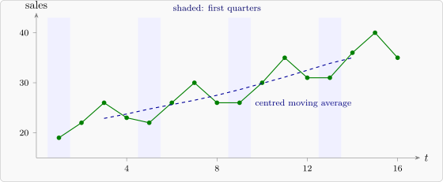

2.4 Estimating and removing the trend
There are two broad approaches: estimate the trend and subtract it, or remove it by differencing.
Fitting a curve
A simple trend can be fitted by least squares as a function of time, for example a straight line \(m_t = a + bt\), a quadratic, or an exponential growth curve \(m_t = ae^{bt}\) (linear after taking logarithms). This gives a formula, but it imposes one shape on the whole series.
Moving averages
A moving average smooths the series by replacing each value with an average of its neighbours. The simple moving average of order \(2q + 1\) is \[ \hat m_t = \frac {1}{2q + 1}\sum _{j=-q}^{q} x_{t+j} , \qquad t = q + 1, \dots , n - q . \]
Proposition 2.4.1. A moving average \(\sum _{j=-q}^{q} w_jx_{t+j}\) with weights that add to \(1\) and are symmetric (\(w_{-j} = w_j\)) leaves a linear trend unchanged: if \(x_t = a + bt\), then \(\sum _j w_jx_{t+j} = a + bt\).
Proof. \(\sum _j w_j(a + b(t + j)) = (a + bt)\sum _j w_j + b\sum _j jw_j = a + bt + 0\), since the terms \(jw_j\) and \((-j)w_{-j}\) cancel in pairs. □
So a moving average keeps the trend while averaging out the irregular fluctuations, whose average over several periods is close to zero. For seasonal data, the window should cover exactly one full season, so that the seasonal effect is also averaged out. With quarterly data a season has \(4\) observations, an even number, so a simple average of four would be centred between two time points. The standard remedy is the centred moving average (or \(2\times 4\) moving average): \[ \hat m_t = \tfrac 18x_{t-2} + \tfrac 14x_{t-1} + \tfrac 14x_t + \tfrac 14x_{t+1} + \tfrac 18x_{t+2} , \] the average of the two four-term averages that straddle \(t\). For monthly data the \(2\times 12\) average is built the same way, with weights \(\frac {1}{24}\) at the ends and \(\frac {1}{12}\) in between.
Proposition 2.4.2. Suppose \(x_t = a + bt + s_t\), where \(s_t\) has period \(4\) (\(s_{t+4} = s_t\)) and \(s_1 + s_2 + s_3 + s_4 = 0\). Then the centred moving average gives \(\hat m_t = a + bt\) exactly.
Proof. The weights are symmetric and add to \(\frac 18 + \frac 14 + \frac 14 + \frac 14 + \frac 18 = 1\), so by Proposition 2.4.1 the trend part passes through unchanged. The seasonal part gives \(\frac 18s_{t-2} + \frac 14s_{t-1} + \frac 14s_t + \frac 14s_{t+1} + \frac 18s_{t+2}\). Since \(s_{t+2} = s_{t-2}\), this is \(\frac 14(s_{t-2} + s_{t-1} + s_t + s_{t+1})\), a quarter of the sum over four consecutive quarters, which is \(0\). □
Seasonal indices
Once the trend has been estimated, the detrended values \(x_t - \hat m_t\) (additive model) contain the seasonal effect plus noise. Averaging them over all the years for each season gives the raw seasonal indices, which are adjusted, if necessary, to add to zero. Subtracting the indices from the data gives the seasonally adjusted series. For a multiplicative model the same steps use ratios \(x_t/\hat m_t\), and the indices are adjusted to average \(1\).
Example 2.4.3. The quarterly sales of a shop (in thousands) over four years were:
| Year | Q1 | Q2 | Q3 | Q4 |
| 1 | 19 | 22 | 26 | 23 |
| 2 | 22 | 26 | 30 | 26 |
| 3 | 26 | 30 | 35 | 31 |
| 4 | 31 | 36 | 40 | 35 |
Estimate the trend by a centred moving average, find the seasonal indices of an additive model, and seasonally adjust the series.
Solution. The trend. The centred moving average at \(t\) is the sum of the two four-quarter totals that straddle \(t\), divided by \(8\). The four-quarter totals, starting from quarters \(1\)–\(4\), are \[ 90, \ 93, \ 97, \ 101, \ 104, \ 108, \ 112, \ 117, \ 122, \ 127, \ 133, \ 138, \ 142 . \] So the first centred average, at \(t = 3\) (year 1, Q3), is \((90 + 93)/8 = 22.875\), the next is \((93 + 97)/8 = 23.75\), and so on:
| \(t\) | Quarter | \(x_t\) | \(\hat m_t\) | \(x_t - \hat m_t\) |
| 3 | Y1 Q3 | 26 | 22.875 | 3.125 |
| 4 | Y1 Q4 | 23 | 23.750 | \(-0.750\) |
| 5 | Y2 Q1 | 22 | 24.750 | \(-2.750\) |
| 6 | Y2 Q2 | 26 | 25.625 | 0.375 |
| 7 | Y2 Q3 | 30 | 26.500 | 3.500 |
| 8 | Y2 Q4 | 26 | 27.500 | \(-1.500\) |
| 9 | Y3 Q1 | 26 | 28.625 | \(-2.625\) |
| 10 | Y3 Q2 | 30 | 29.875 | 0.125 |
| 11 | Y3 Q3 | 35 | 31.125 | 3.875 |
| 12 | Y3 Q4 | 31 | 32.500 | \(-1.500\) |
| 13 | Y4 Q1 | 31 | 33.875 | \(-2.875\) |
| 14 | Y4 Q2 | 36 | 35.000 | 1.000 |
No centred average exists for the first two or last two quarters.
Seasonal indices. Averaging the detrended values quarter by quarter: \begin {align*} \text {Q1}: \ & (-2.750 - 2.625 - 2.875)/3 = -2.75 , \\ \text {Q2}: \ & (0.375 + 0.125 + 1.000)/3 = 0.50 , \\ \text {Q3}: \ & (3.125 + 3.500 + 3.875)/3 = 3.50 , \\ \text {Q4}: \ & (-0.750 - 1.500 - 1.500)/3 = -1.25 . \end {align*}
These add to \(-2.75 + 0.50 + 3.50 - 1.25 = 0\), so no adjustment is needed. Sales are \(3.5\) thousand above trend in the third quarter and \(2.75\) thousand below it in the first.
Seasonally adjusted series. Subtracting the indices,
| Year | Q1 | Q2 | Q3 | Q4 |
| 1 | 21.75 | 21.50 | 22.50 | 24.25 |
| 2 | 24.75 | 25.50 | 26.50 | 27.25 |
| 3 | 28.75 | 29.50 | 31.50 | 32.25 |
| 4 | 33.75 | 35.50 | 36.50 | 36.25 |
The adjusted series rises steadily, by about one thousand a quarter, and shows that the jump from Q4 to Q1 each year is not a real fall in business but the seasonal pattern. Figure 2 shows the data and the trend.

Differencing
Instead of estimating the trend, it can be removed by differencing. The difference operator is \(\nabla x_t = x_t - x_{t-1}\), and the seasonal difference of period \(s\) is \(\nabla _sx_t = x_t - x_{t-s}\).
- (i)
- If \(m_t = a + bt\), then \(\nabla m_t = b\), a constant; if \(m_t\) is a quadratic in \(t\), then \(\nabla ^2m_t = \nabla (\nabla m_t)\) is a constant.
- (ii)
- If \(s_t\) has period \(s\), then \(\nabla _ss_t = 0\).
Proof. (i) \(\nabla (a + bt) = (a + bt) - (a + b(t - 1)) = b\). For \(m_t = a + bt + ct^2\), \(\nabla m_t = b + c(2t - 1)\), which is linear in \(t\), so a second difference gives the constant \(2c\). (ii) \(\nabla _ss_t = s_t - s_{t-s} = 0\) by periodicity. □
Differencing is the basis of the ARIMA models of later sections. For the quarterly sales, the seasonal differences \(\nabla _4x_t\) are \(3, 4, 4, 3, 4, 4, 5, 5, 5, 6, 5, 4\): the seasonal pattern has gone, and what remains varies around the yearly growth of about \(4\) (four quarters at one thousand each).
Questions on this section
Stuck on something here? Ask below and it stays attached to this topic.